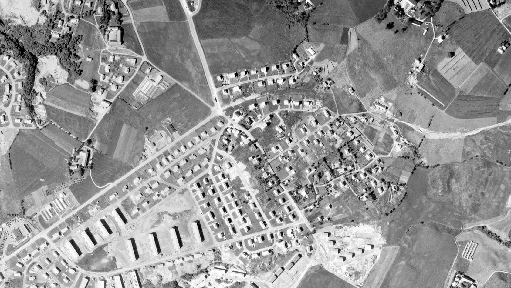
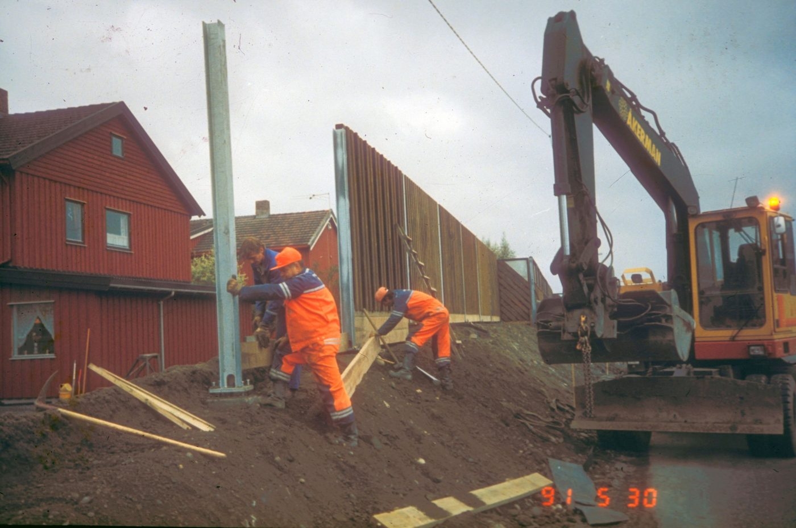

Vegen ble bygd om fra to til fire felt mellom Klæbuvegen og Moholt i 1989-1992, som første del av Trondheimspakken. Støyskjermene ved Nardo ble montert våren 1991.WikiStrinda, “Omkjøringsvegen”, Strinda historielag. Foto: Støyskjermer monteres ved Nardo, 30.05.1991, Norsk vegmuseum, NVM 16-F-03131. Foto: Omkjøringsvegen mot Sluppen, sett fra rundkjøringen i Nardo-krysset, 05.07.1991, Norsk vegmuseum, NVM 16-F-03137.

de helsemessige sidene ved å bo i umiddelbar nærhet av sterk trafikk. I mars 1988 skrev Statens vegvesen til grunneierne at utvidelsen ville føre til inngrep på over 100 eiendommer, og at de satset
på å skjerme boligområdene så godt som mulig. Adresseavisen, 24.06.1986, s. 3, og Nidaros, 10.03.1988, s. 5, via nb.no
Ved å øke eksisterende skjerms høyde til 2 m, vil det ikke oppstå støyøkning før trafikken overstiger ca 35 000 kjt/døgn.I 2025 var trafikken ved Nardo 47 200 kjøretøy i døgnet. Trondheim bygningsråd, sak R 123, møte 16.06.1987, utdrag s. 1, 4 og 5. ÅDT 2025: Statens vegvesen, Trafikkdata.
Vegvesenet vedlikeholder de støyvoller og skjermer som blir etablert i henhold til punkt 6.1. A.Saksøkeren påtok seg for alle berørte boligeiendommer bygningsmessige tiltak
med sikte på at døgnekvivalent støyniva ikke skal overstige 35 desibel A innendørs(pkt. 6.1 B og 6.2 A, s. 16). Retten la til grunn at støynivået foran husfasadene med de nye skjermene ville ligge mellom 55 og 62 dB
ved en årsdøgntrafikk på 35000 kjøretøyer, og skrev:
Forutsetningen for dette er at årsdøgntrafikken ikke overstiger 35000 kjøretøyer pr. døgn.Retten skrev også at støynivået ved en dobling til 70000 ikke ville stige med mer enn 3 dB, og at økningen ikke ville overstige det de saksøkte måtte finne seg i (s. 22). Om innendørsstøy skrev retten at skjønnsforutsetningene løste spørsmålet
ved å garantere at innendørs støynivå ikke skal overstige 35 decibel A(s. 23). Ut over skjønnsforutsetningene og det øvrige fremlagte materialet påtok saksøkeren seg ikke
arbeid eller andre forpliktelser(pkt. 1 A, s. 10). I 2025 var ÅDT 47 200.Trondheim skjønnsrett for bygningssaker, skjønn 15.09.1989 (sak 4/1989), utdrag s. 10, 16, 22 og 23, oversendt av Statens vegvesen 19.11.2026. ÅDT 2025: Statens vegvesen, Trafikkdata.
Ved gjennomføring av skjermingstiltak skal et maksimalt ekvivalent døgnnivå på 35 dbA oppnås inne og 55 dbA tilstrebes ute.Ordlyden skiller mellom 35 dbA, som skal oppnås inne, og 55 dbA, som tilstrebes ute. Grensene
skal gjelde hele Omkjøringsvegen. Planen for Nardokrysset sier også:
Alle støyskjermer blir gjort lydabsorberende.og
Støyskjermingstiltakene skal ferdigstilles samtidig med veganlegget.Reguleringsbestemmelser r0290 (Klæbuvegen til Nardokrysset, tillegget s. 4), r0291 (langs Omkjøringsvegen, tillegget s. 2) og r0291b (Nardokrysset) § 2, tillegget vedtatt i bystyret 28.09.1989. Setningene om lydabsorberende skjermer og ferdigstilling står bare i r0291b.
Vi tar sikte på å gi bedre støydemping enn det er idag selv om trafikken skulle øke fra dagens 22 000 kjøretøy/døgn til for eksempel 35 000 kjøretøy/døgn.Det er det samme tallet NTH regnet med i 1986. I 2025 var trafikken ved Nardo 47 200 kjøretøy i døgnet. Adresseavisen, Ordet fritt, 13.12.1989, s. 45, via nb.no. ÅDT 2025: Statens vegvesen, Trafikkdata.
fremdelesgjelder. Om 35 dBA inne skriver byrådet:
At et maksimalt ekvivalent døgnnivå på 35 dbA skal oppnås inne forstås som et absolutt krav. Dette vil være en bindende føring for støyisolering av fasadene, samt ved utforming av støyskjermen.Om 55 dBA ute:
At 55 dbA skal tilstrebes ute anses som retningsgivende og ikke et absolutt krav.For området rundt Nardo skole og barnehage gjelder i tillegg r0290f, som viser til støygrensen i T-1442 og NS 8175 klasse C. Byrådets notat 10.11.2026 (2026/22) til byutviklingsutvalget, sak 24/26, s. 1-3.
underskrider 35 dB med rimelig god margin, at utendørs nivå foran fasade i 2. etasje stort sett lå på 62-69 dB, og at 65-70 dB
må forventes ved mange boliger nær vegenved en årsdøgntrafikk på 35 000 (sammendrag, s. III). Konsulenten skrev også at faktiske hastigheter etter visse indikasjoner lå
nærmere 80 km/t enn 70 km/t(s. 11).SINTEF DELAB, rapport 40-A92152, 27.10.1992, utdrag forside, s. III og 11
i overensstemmelse med skjønnsforutsetningene, og
I ettertid har vegvesenet økt fartsgrensen til 70 km/t. Statens vegvesen har ikke funnet dokumentasjon på når fartsgrensen ble hevet. Vegdirektoratet skrev også at det
må for eksempel være anledning til å endre fartsgrensen dersom de totale hensyn tilsier det. Brevet er sladdet.Vegdirektoratet, brev 26.01.2001 (2000/05236-3), s. 1. SVV, brev 13.11.2026 (26/199383-43), s. 2, pkt. 3.1
Ideelt sett burde E6 Omkjøringsvegen ha ligget i en såkalt miljøtunnel gjennom hele Nardoområdet, men ut i fra de tildelte økonomiske rammene var det dessverre ikke midler til et slikt tiltak.SVV, brev 17.06.2005 (2005/38845-002), s. 1. Brevet er sladdet
følgeligikke var krav om tiltak. De skrev også:
Vi er likevel klar over at området har høyt støynivå.og
Vi har diskutert å forhøye skjermen forbi Sundlandsskrenten/gamle Motortrade, men foreløpig har vi ikke midler til dette prosjektet.SVV, brev 17.06.2015 (2015/054513-002), s. 1. Brevet er sladdet
Vegvesenet bestilte ny skjerm på sørsiden, fra Njords veg 1 til Klæbuveien 205, ca. 900 meter. Nærmere 30 boliger i Njords veg og Karl Jonssons veg hadde utendørs støy mellom 65 og 72 dB. Skjermen skulle erstattes med ny og trolig noe høyere støyskjerm
, og målet var at uteområde for boligene etter skjerming får lydnivå under 60 dB
. Bestillinga oppgir gjennomføring i 2017/2018 og 7 mill. kr.
I august samme år stoppet prosjektet:
“For å kunne oppnå en forbedring så må utforming og høyde på skjerm endres vesentlig.”SVV, intern e-post 21.08.2017, sak 17/34060-20
Samme høst skrev vegvesenet til kommunen: Vegvesenet vil jobbe videre for å få finansiert et større prosjekt med støytiltak.
eksisterende skjermer begynner å forfalle og at de enkelte steder burde vært noe høyere. Om forprosjektet skrev hun:
Forprosjektet vil bli gjennomført i perioden 2019-2023.og
Hensikten med forprosjektet er å skaffe mer kunnskap og grunnlag for kostnader som må legges inn i budsjett.Hun la til at
Støyskjerming er viktig for både opplevelse av livskvalitet, et godt bomiljø og helse.Trondheim kommune, ordføreren, svar på henvendelse om støyskjerming, 14.01.2019 (18/41490), s. 1. Utsagnet om forfall og høyde er ordførerens gjengivelse av hva Vegvesenet sa
Henvendelsen ble ikke besvart, noe som burde vært gjort.Svaret kom først 29.10.2026, og Vegvesenet “beklager at dere ikke tidligere har fått svar på henvendelsen”.SVV, brev 09.10.2026, sak 26/199383-23, s. 3, pkt. 4. SVV, svar til kommunen 29.10.2026 (23/74840-2), s. 1
Utskifting av støyskjermer langs riksveg “må finansieres gjennom miljøpakken da de kommer utenom det som eventuelt allerede er oppgitt i NTP”.SVVs innspill til Handlingsplan mot støy 2024-2029, Trondheim kommune sak 2024/19783-1, s. 11. E6 Nidarvoll-Moholtlia er første eksempel. Se kortet under Motstrid.
Kommunens handlingsplan mot støy 2024-2029 fører opp E6 Nidarvoll-Moholtlia som planlagt tiltak med Fokusområde: Ny og bedre skjerm på strekningen
, og Nardo skole og barnehage som støyprosjekt, begge med Statens vegvesen som ansvarlig. Kommunen skriver at oppføringa bygger på vegvesenets eget innspill.
for lav til at den gir tilstrekkelig skjerming for skolen, barnehagen og store boligområder(s. 3), og at hun
vil be Statens vegvesen om å melde prosjektet inn til Miljøpakken(s. 4-5). Se kortet under Motstrid.Byrådet i Trondheim, saksframlegg 2025/25538, 28.10.2025
den eneste realistiske mulighetenfor en vesentlig oppgradering av skjermingen, og:
vi kan love at vi vil følge opp dette utover høsten.SVV, brev 16.07.2026, sak 26/199383-2, s. 1-2
bør gå til andre formål. I oktober omtales forprosjektet fra 2017-2018 som
en verbal ambisjon, og bedre skjerming ved skolen som
et ordinært vedlikeholdstiltak. Den 19. oktober skriver de at
det er ingen bestemmelse i byvekstavtalen som er til hinder for at Miljøpakken finansierer støyskjerming langs riksveg. Den 30. oktober er de
enig i at betegnelsen er upresis.SVV, brev 11.09.2026 (26/199383-13), 09.10.2026 (26/199383-23) og 19.10.2026 (26/199383-28), s. 4, og 30.10.2026 (26/199383-30), s. 1
← Tilbake til faktasida, med krav, status, tall, saksgang og dokumenter.